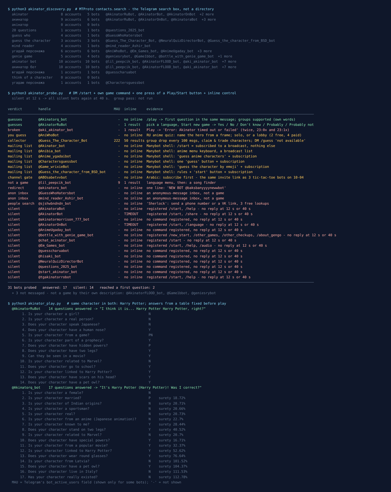

Akinator on Telegram: 34 Bots Found, 2 Still Guess
Akinator is the genie that reads your mind. You think of a character, real or made up, and it asks you questions until it names them. It was made by the French company Elokence and launched in 2007, and Wikipedia sums up how it plays: it “attempts to determine what media or real-life character, object, or animal the player is thinking of by asking a series of questions”, which you answer with Yes, No, Don’t know, Probably or Probably not. It is the old party game Twenty Questions, with the computer doing the guessing.
Type “akinator” into Telegram and you get a whole row of genies. So on the evening of 7 October 2026 I asked Telegram’s own search for every Akinator, 20 Questions and “guess the character” bot it knew about, messaged each one, and then played the same game against the ones that worked. 34 bot accounts came back. 3 were plainly something else and I never messaged them. Of the 31 I did message, 14 said nothing at twelve seconds and again at forty. 17 answered, and only 2 of those 17 ever asked me a question.
Both of those 2 guessed my character. One needed 14 questions, the other needed 17, and the slower one kept asking whether my character was from Latvia after its own meter said it was more than 100% sure.

How the list was built
The list came from the platform, not from a directory. Telegram’s search box is an API method called contacts.search, and it only returns accounts that exist right now. Bot directories are a different story: a listing can outlive the bot by years, and as you’ll see below, the handle that most of them still list for “Akinator” doesn’t answer.
I fixed nine queries before measuring anything: akinator in Latin, Russian and Ukrainian spelling, 20 questions, guess who, guess the character, mind reader, угадай персонажа (“guess the character” in Russian) and genie game. They returned 22 bots, so I added a second round of five more (akinator bot, акинатор бот, the Ukrainian вгадай персонажа, think of a character and угадаю персонажа), and the total went to 34. Both rounds are in the image, so you can see which query found what. Two queries found nothing at all, including the Ukrainian spelling of Akinator.
Three accounts I left alone because their own descriptions said what they were: a join-request desk for a chat called “flood”, an anonymous confession relay, and a list of club codes in French. Every other bot got the same three things: /start in a private chat, the bot’s own game command if it had registered one (/play, /guess), and one press of a button labelled Play or Start if it showed me one. Then an inline query, which Telegram forwards to the bot’s server. A bot that stayed quiet at twelve seconds got a second /start and forty seconds to reply.
Most Akinator bots are switched off
13 of the bots I messaged call themselves Akinator, in their username or, for one, in their own description. Here is what they did:
- 2 played.
@AkinatorRuBotand@Akinatorq_botboth put up a first question with the full set of answers. More on them below. - 1 started and broke.
@aki_akinator_bothas the nicest menu of the lot: Play, a leaderboard, themes, a child mode and inline play. I pressed Play and got “Loading…”, and then: “Error: Akinator timed out or failed. Please /play again.” I did, about ten minutes later. Same message. - 1 was a mailing list (more on those below), and 1 replied with one line advertising a different bot.
- 8 said nothing, twice. That includes
@AkinatorBot, the handle that bot directories such as tdirectory and botostore still list for “Akinator”, and@AkinatorOnBot. Both also failed the inline test: their inline mode is switched on, Telegram passed my query to them, and nothing came back within eight seconds.
None of the bots I found says it is made by Elokence. That is the likely reason so many are dead. As far as I can tell, they are third-party wrappers that send your answers to the Akinator website and relay its questions back to you. When the website changes, every wrapper breaks at once. The README of one Python library for Akinator tells that story in a single paragraph: the original library “stopped working after Akinator made changes to their backend API”, and the next one “became non-functional when Cloudflare protection was introduced on Akinator’s endpoints”. The current one gets round that with a tool built to pass Cloudflare’s bot checks. A Telegram bot built on any of the older versions would look exactly like the 8 above. @aki_akinator_bot looks like a bot whose server is still running but can no longer get answers from the website. Its inline mode still answered my test.
The two that work: same character, two games
I wanted to know if the two working bots were really Akinator or something else wearing the costume, so I played the same game against both. Before the first question I picked the character (Harry Potter: famous, fictional, and easy to answer questions about) and wrote down how I would answer the obvious questions: not a woman, not real, wears glasses, has a scar, British, goes to school, not from anime, not Marvel. Anything the list didn’t cover, I answered by hand, honestly, as it came up. Each question and answer is in the image.
@AkinatorRuBot got there in 14 questions. It asks you to choose a language first, then shows a “Start new game” button. In English it opened with “Is your character a girl?”, then went through real person, speaks Japanese, human nose, from a game and part of a prophecy, before narrowing it down: in a movie, goes to school, linked to Harry Potter, scars on his head, pet owl. Then: “I think it is… Harry Potter, right?” It shows its confidence as a percentage under each question; that went from 0% to about 98% just before the guess. Five answer buttons plus Back and Start new game, which is the real Akinator layout.
@Akinatorq_bot took 17. It also answers /play with a first question straight away and says in its welcome message that it works in groups too. Its route was odder. It asked whether my character was married, of Indian origin, a sportsman and real, before getting to anime, Marvel, special powers and “linked to Harry Potter?” at question 12. After “round glasses” its “Surety Meter” read 101.52%, and instead of guessing it asked: “Is your character from Latvia?” Then a pet owl (104.37%), then “Does your character live in Italy?” (111.53%), then whether he really existed (112.78%), and only then: “It’s Harry Potter (Harry Potter)! Was I correct?”
A meter above 100% is a display bug, not magic. The extra questions are the bigger tell. My guess is that it doesn’t handle the moment when the Akinator site wants to make a guess, so it carries on asking until its own cut-off kicks in. That cost three questions here. The Latvia question is the funniest thing in the census. The underlying engine did its job: both bots named the character, from what looks like the same database. They just differ in how well they wrap it.
One game each is not a benchmark. A harder character might split them differently. But if you want one Akinator in Telegram tonight, @AkinatorRuBot is the one I’d open.
Want a party game that is definitely switched on?
The free Party Game runs inside Telegram itself, with nothing to add to your group and nothing reading the chat: Truth or Dare, Never Have I Ever and Would You Rather for when the genie has guessed everyone in the room.
Open the Party Game No Telegram? It runs in a browser too: charliemorrison.dev/party-gameWhat else answers to “Akinator” and “guess the character”
The other 14 bots that answered were not a mind-reading genie. In order of how harmless they are:
Games where you do the guessing (2). @AniWhoBot is a Russian-language anime quiz: it shows a frame, you name the character or the show. It has solo play and a lobby you can invite friends to by code, free for two players and up to four with the creator’s subscription. Its quick-play button put me in a queue for a random opponent: 15 questions, easy and medium. @Guess_The_Character_Bot is a group collector: added to a group, it drops a character picture every 100 messages, and people race to claim, collect and trade them. In a private chat its /guess just said the game is not available there. It is the only game in the census whose account shows a monthly user count: 222. If what your group wants is a trivia race rather than a genie, the quiz bots I tested are better built for it.
Mailing lists (6). @Akinator_bot and five other “guess the character” bots, mostly about anime, are shells made with Manybot, a builder that turns a bot into a broadcast channel. Pressing /start doesn’t start a game; it subscribes you, and the bot says so: “Congratulations! You subscribed to Akinator. Use /off to pause your subscription.” Some show a keyboard of anime titles, which makes them look like a quiz. I sent /off to all six afterwards and each one confirmed the subscription was paused.
A channel gate (1). @ABOsabetvvbot answered in Arabic: subscribe to the bot’s channel before you can use it. The invite link is the exact one that three Arabic bots sent me in the tic-tac-toe census three days earlier. Different game, different bot name, same channel collecting subscribers.
Not games at all (5). Two bots that turned up for “guess who” and “mind reader” are anonymous message inboxes built with @AnonCreatorBot: you write, the owner reads, and nobody sees your name. They are the subject of a separate post, and not a guessing game. One “akinator bot” result opened a language menu and then offered to find a song from its lyrics. One replied with a single line pointing to a new bot. And one, a bot with a keyboard-mash username, answered with a menu, a “new bot” link and a third message introducing itself as “Sherlock”, offering three free searches if I sent a phone number, a VK profile link or a Telegram username. That is a people-search service, and it showed up when I searched for a game. Don’t send it anyone’s number, including your own.
How to play Twenty Questions in a group chat without a bot
Akinator only ever guesses. The human version is better in a group, because everyone gets a turn at the hard part, and Telegram has everything it needs:
- Lock in the answer. The person who is “it” writes their character in Saved Messages (or tells one other player in a private chat) before the first question. That stops anyone changing the answer halfway through.
- Questions are replies. Everyone asks yes/no questions by replying to the host’s opening message, so the questions stay in one thread while the chat carries on.
- Answer with reactions. 👍 for yes, 👎 for no, 🤔 for “don’t know”. One tap, and everyone can see the history at a glance by scrolling the thread.
- Count to twenty. The host numbers every question in the reaction or in a short reply. A guess counts as a question. Twenty used up, and the host wins.
- Steal the genie’s trick. Akinator’s best questions sort big groups fast: real or made up, from a film or a game, a person or not. Ask those first and save the names for the end.
For more games that work the same way, with nothing to add to the group, the game night guide has a full evening planned out.
When the group wants more than one game
Twenty Questions needs nothing but a host. The Telegram Party Pack is for the rest of the night: 110 Truth or Dare, 45 Never Have I Ever, 30 Would You Rather, 30 Most Likely To, 25 Paranoia and 15 Story Chain prompts, as copy-paste text and ready-made poll blocks, with a host guide. 255 in total, nothing that needs a bot.
Get the pack — $9.99 Or see the party games list for what holds up in a bigger group.What I could not test
No group pass. Everything here comes from private chats, inline queries, each bot’s own text and buttons, and the flags on its account. The account I test from can’t create groups, and I don’t borrow strangers’ groups to test bots in. So “works in groups” for @Akinatorq_bot is its own claim, not something I saw.
One game per bot. Two games against one well-known character show that the bots work and how they behave. They don’t show which one is smarter. A minor character, an object or an animal could go very differently.
Silent is not dead for good. Wrapper bots are exactly the kind that come back when someone patches the library, and go quiet again when the website changes. In other censuses on this site, bots came back from silence within three weeks. The date at the top of this page matters more than the list. One more note: @akinatormorrison_777_bot has nothing to do with me. It was silent too.
If you want to play tonight
- You want the genie:
@AkinatorRuBot, choose English, press Start new game.@Akinatorq_botis the backup; ignore any question it asks once its meter is past 100%. - You want everyone to play: run Twenty Questions by hand with reactions, as above.
- Avoid: any “Akinator” that subscribes you to something when you press Start, wants you to join a channel first, or asks for a phone number.
- More games: the free Party Game, or Telegram games for two if it’s just the two of you.